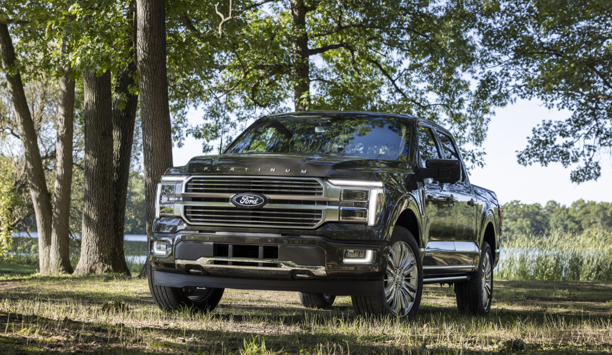

Comparison tools
Compare the lineup your way.
This page combines two decision tools. The table gives a fast side-by-side overview, while the trim slider lets you move through the lineup and watch the truck personality shift from work-focused to luxury or extreme off-road.

Value trucks
Luxury trucks
Off-road trucks
Interactive slider
Interactive tool
Trim slider comparison
Slide across the lineup to see how the truck changes in role, feel, and overall personality.

XLT
Best all-around value
XLT is the safest pick for most buyers because it adds better styling, better comfort, and strong everyday versatility.
Personality meters
Towing confidence
Luxury feel
Off-road attitude
This is not meant to be an exact factory measurement tool. It is a visual guide to help users quickly understand where each trim sits in the lineup.
| Trim | Main Personality | Comfort Level | Off-Road Focus | Typical Buyer | Best Use Case |
|---|---|---|---|---|---|
| XL | Basic and practical | Low to moderate | Low | Budget-minded owner or fleet buyer | Work duty and straightforward value |
| XLT | Balanced and flexible | Moderate | Low to moderate | Everyday truck shopper | Daily use with strong capability |
| Lariat | Premium all-rounder | High | Moderate | Buyer wanting comfort + usefulness | Upscale daily driving and towing |
| King Ranch | Luxury with personality | High | Moderate | Style-conscious truck buyer | Premium cruising with distinctive trim identity |
| Platinum | Modern luxury | Very high | Moderate | Tech- and comfort-focused driver | Refined premium ownership |
| Limited | Loaded flagship feel | Very high | Low to moderate | Buyer wanting nearly everything included | Top-tier comfort and convenience |
| Tremor | Trail-ready all-rounder | Moderate to high | High | Weekend off-road explorer | Adventure use without losing normal truck function |
| Raptor | Extreme performance | High | Very high | Off-road enthusiast | High-speed dirt, aggressive terrain, standout styling |